Junior Data analyst proficient in Excel, powe BI, Python, Tableau and SQL.
Experties includes data visualization, analysis and interpretation.
Proven ability to derive actionable insights, implement data driven strategies
and optimize processes. Strong Communication Skills, with a track record of delivering impactful
reports and recommendations.

In this project I take an entire call center data clean it using Python.
In this project I take a Walmart sales data analyze the data using SQL.
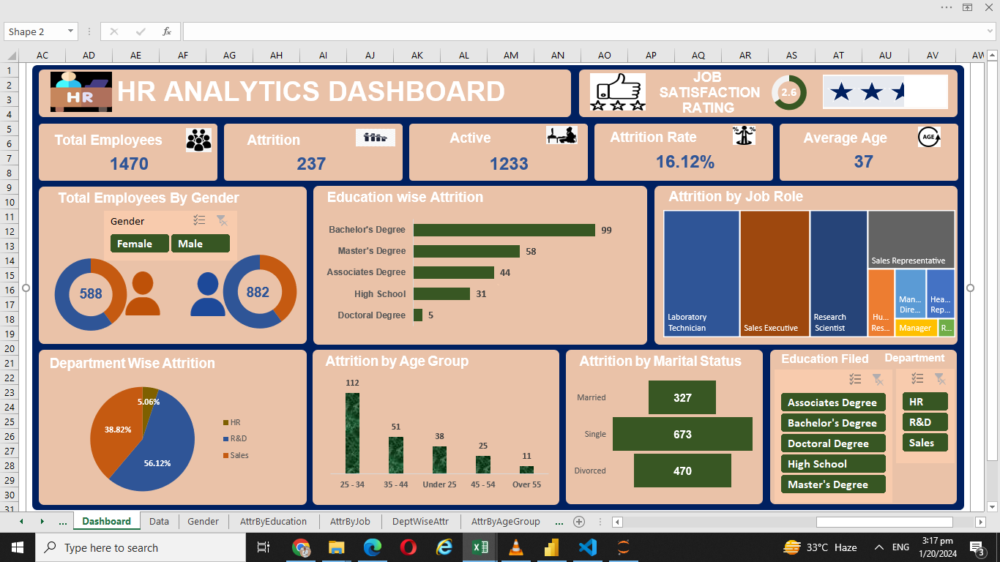
In this project i Design HR Dashboard in Excel.
- We take data and clean the data.
- We look for (1) Total Employee (2) Attrition Rate (3) Active Employee.
- Education wise Attrition using horizontal Bar chart.
- Attrition by Job Role using TreeMap .
- Total Employee by Gender using donough chart.
- Department wise Attrition using pie chart.
- Creating Filters.
- Dashboard.
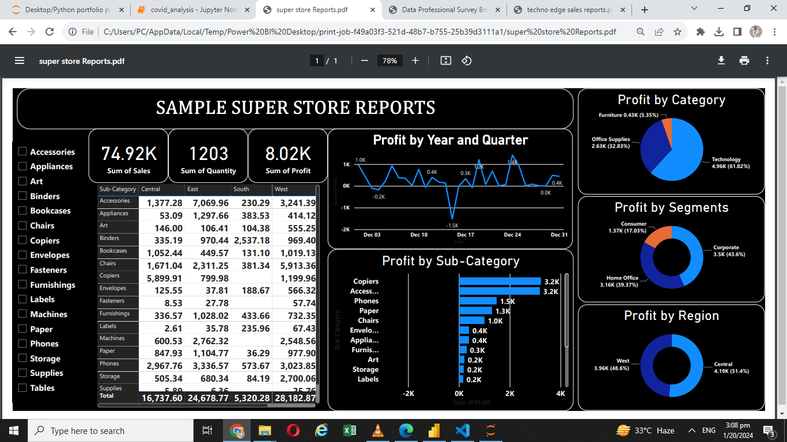
In this project I Design Super Store Report in Power BI.
- I take data and clean the data using power query.
- Profit by year and Quarter using line chart.
- Profit by Sub-Category using Horizontal Bar chart .
- Profit by Category using Pie chart.
- Profit by Region using donough chart .
- Creating Filters.
- Dashboard.
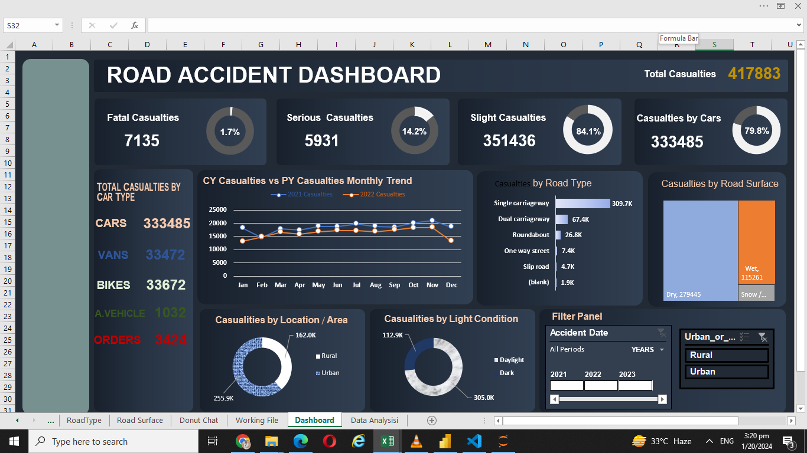
In this project i Design Road Accident Dashboard in Excel.
- We take data and clean the data.
- We look for (1) Fata Casualties (2) Serious Casualties (3) Slight Casualties.
- Casualties by Road type using horizontal Bar chart.
- Casualties by Road Surface using TreeMap .
- Casualties by day / night using donough chart.
- Casualties by location using donough chart.
- Creating Filters.
- Dashboard.
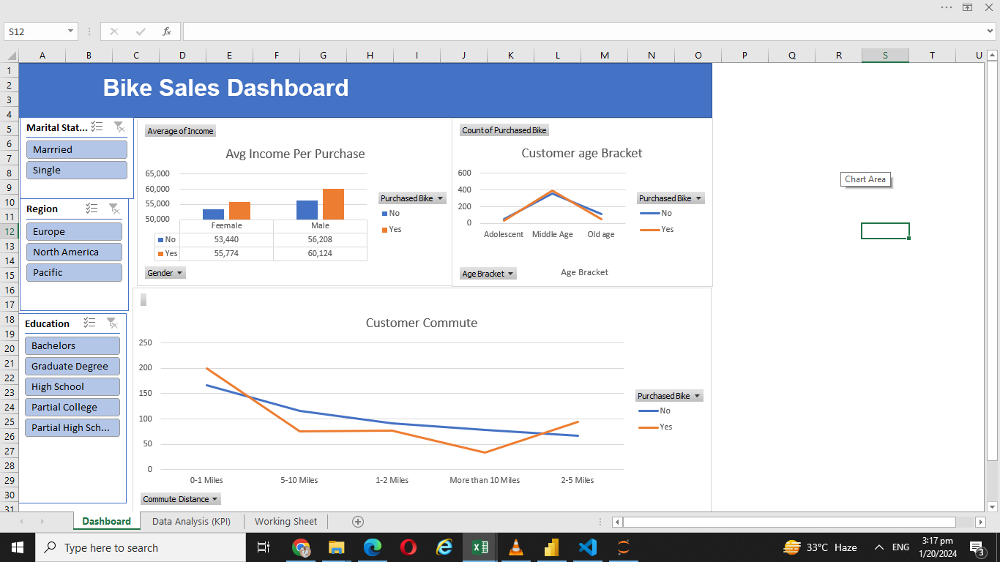
In this project I Design Bike Sales Dashboard in Excel.
- I take data and clean the data using Excel power query.
- Average income per purchase using bar chart.
- Customer age bracket using Line chart .
- Creating Filters.
- Dashboard.
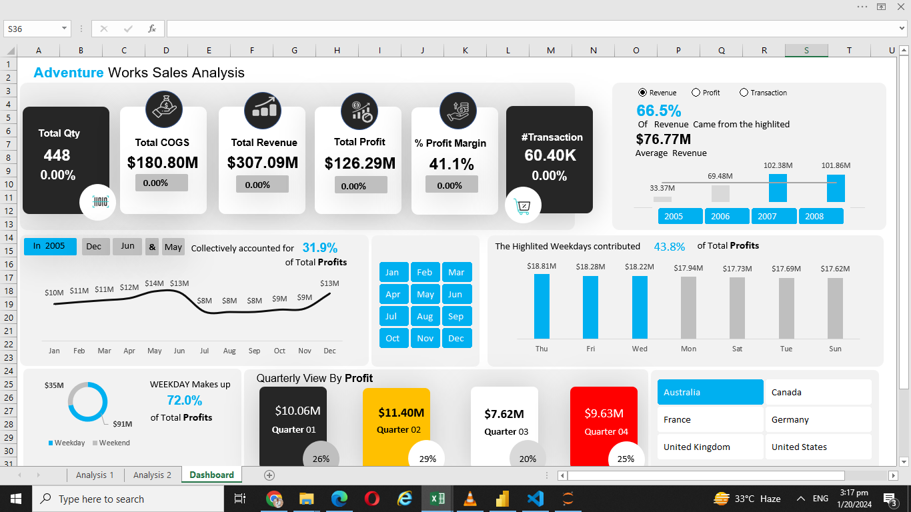
In this project i Design Adventure Works Sales Dashboard in Excel.
- I take data and clean the data using Excel power query.
- We look for (1) Total Quantity (2) Total Revenue (3) Total Transaction (4) Total Profit
(5) Total cost of good sold (6) Percentage profit margin .
- Creating Filters.
- Dashboard.
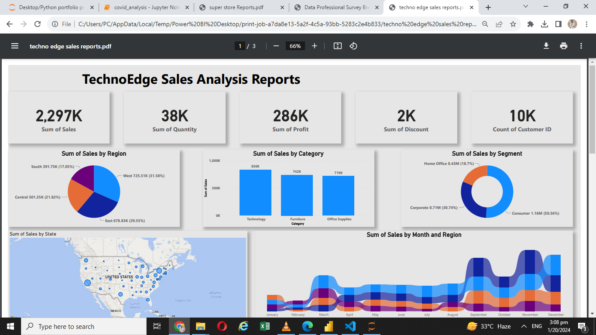
In this project I Design Techno Edge Sales Report in Power BI.
- I take data and clean the data using power query.
- Sum of sales by Region using pie chart.
- Sum of sales by Category using line chart.
- Sum of sales by Segment using donough chart
- Sum of sales by State using Map chart
- Creating Filters.
- Report.
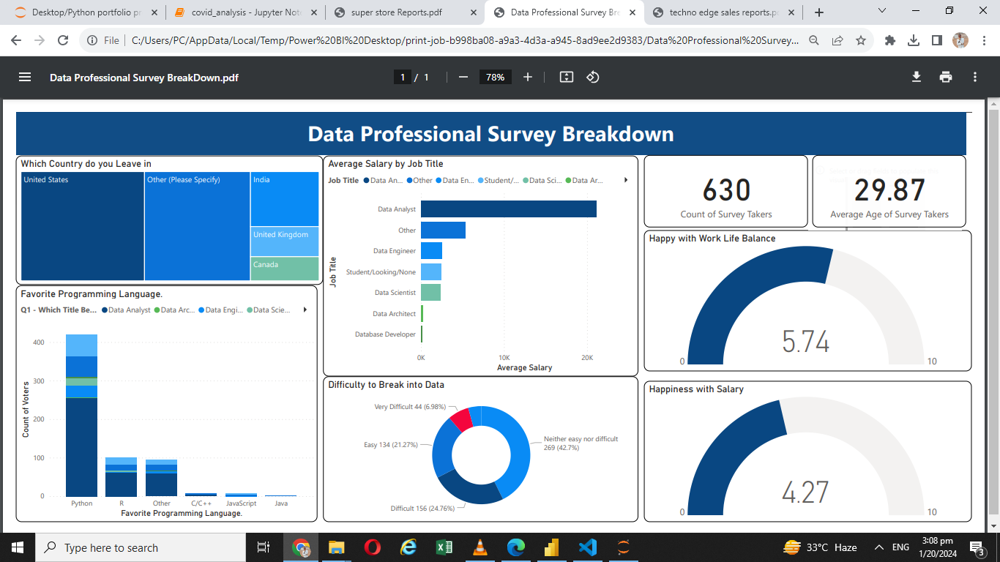
In this project I Design Data Professional Survey BreakDown Report in Power BI.
- I take data and clean the data using power query.
- which country do leave in using TreeMap chart.
- Average salary by job title using horizontal bar chart.
- Favourite programming Language using bar chart
- Difficulties break into data using donough chart
- Creating Filters.
- Report.
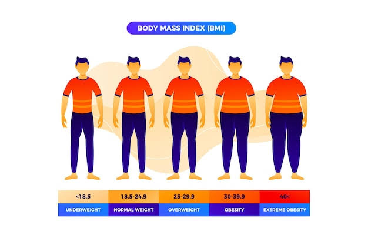
In this project I made a simple BMI calculator.
Using Python

In this project I take dataset of different cars with their specification.
Aalyze the data using Python .
In this project I will analyze Netflix dataset, this dataset has the information about the TV shows and Movie availabe on netflix from 2021.
The dataset is collected from fixable which is third party Netflix search engine, and availabe on kago website for free.
We clean and analyze the data using Python.
In this project I scrape data from jiji.ng website to analyze price data for products
Using puthon.

In this project I takes 12 months salse data in CSV format combined them into single file using pandas
analyze the using Python-pandas.
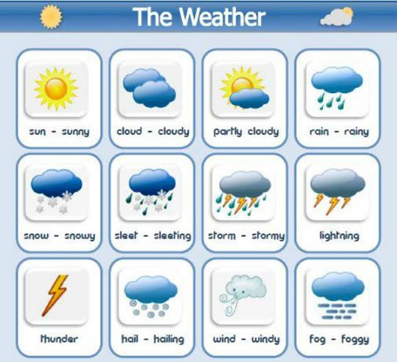
In this project I collect a real time weather dataset with per hour information about the weather condition at a particular location.It record temperature, Dew Points Temperature,
relative humidity, wind speed, visibility, pressure and conditions.
We analyze and vitualize the data using Python.
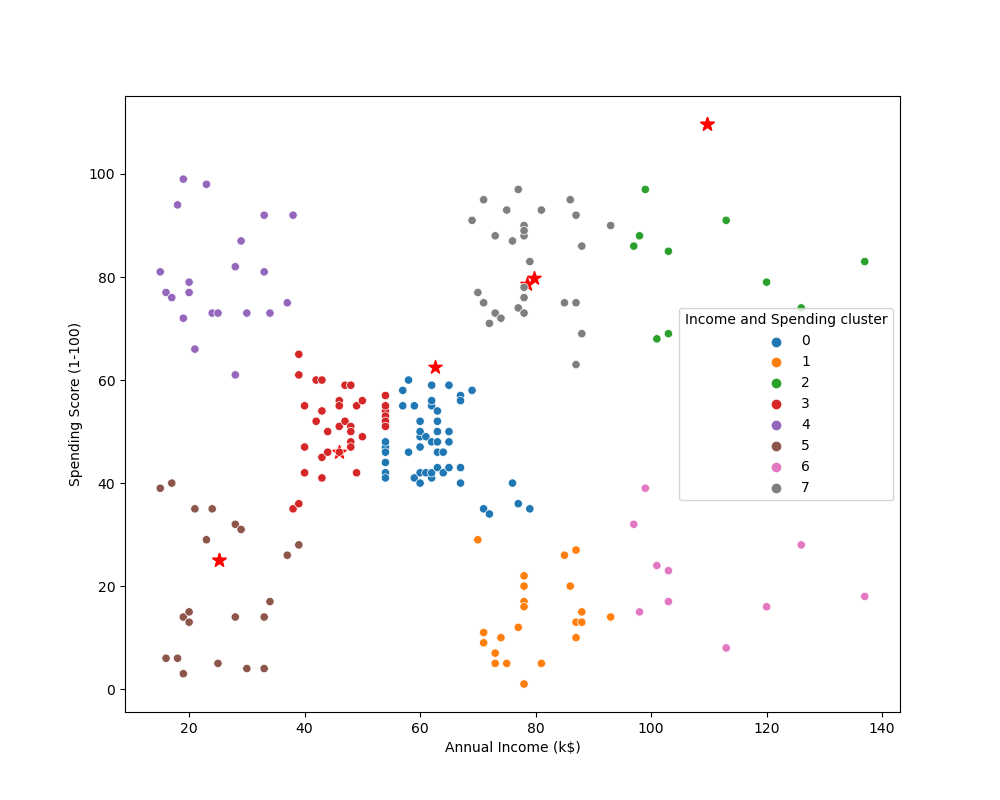
In this project we take a real world data perform customer Cluster analysis using python-pandas and Sklearn Liberary .
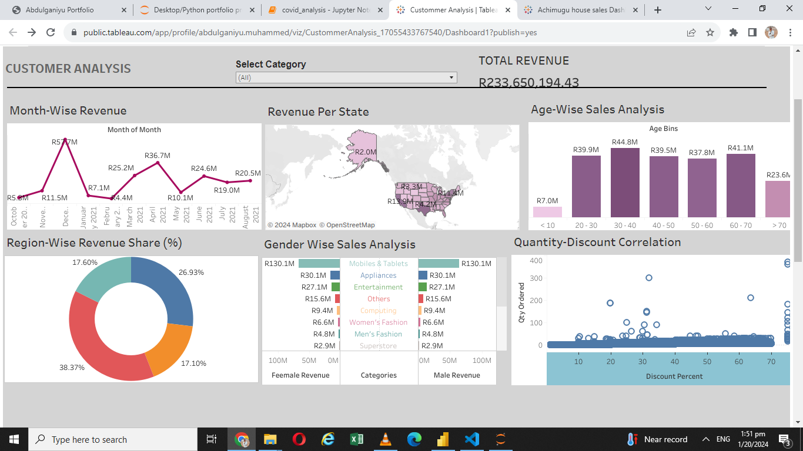
In this project i created customer analyze Dashboard in Tableau with the following Featues.
- Revenue Per state using in Map.
- Revenue based on month of the year using line chart.
- Revenue base on age using Bar chart.
- Quantity - Discount Percentage correlation
- Percentage of Revenue per Region using donough chart
- Revenue per Category per Gender using butterfly chart
- Dashboard
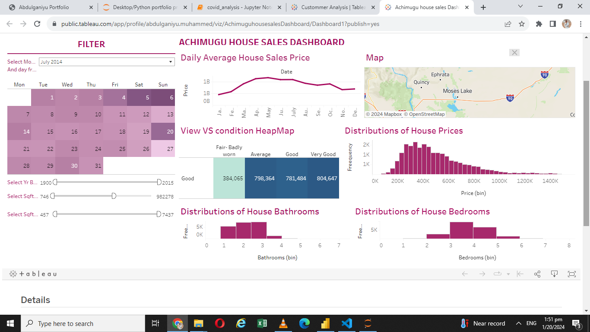
In this project i created Dashboard for Achimugu House sales in Tableau with the following Featues.
- Daily Average House Sales Price using Line chart.
- View VS condition of the House using HeapMap.
- Distributions of House Prices using Bar chart.
- Distributions of House Bathrooms using Bar chart.
- Distributions of House Bedrooms using Bar chart.
- map for the location.
- Creating Filters and Callender.
- Dashboard.
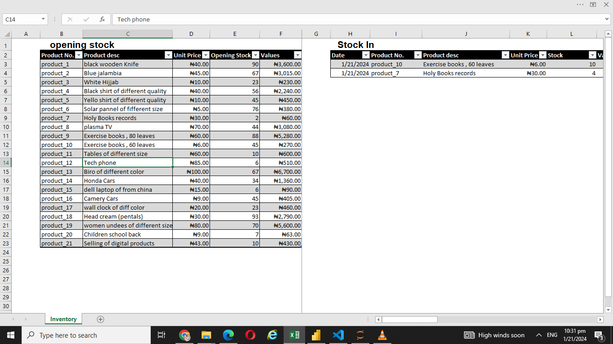
In this project I created an Inventory Management from scratch for immaginary Chops in Excel with following features
Opening Stock.
Stock In.
Stock Out.
Clossing Stock.

In this project i use two different dataset (1) covid statewise dataset (2) vaccination dataset from India to perform the following task:
- I clean the data
- adding active case to the table
- Creating pivote table
- top 10 active cases state
- top 10 state with highest death case
- growth trends
- male vs female vaccinated
- most vaccinated state
{kind=link}